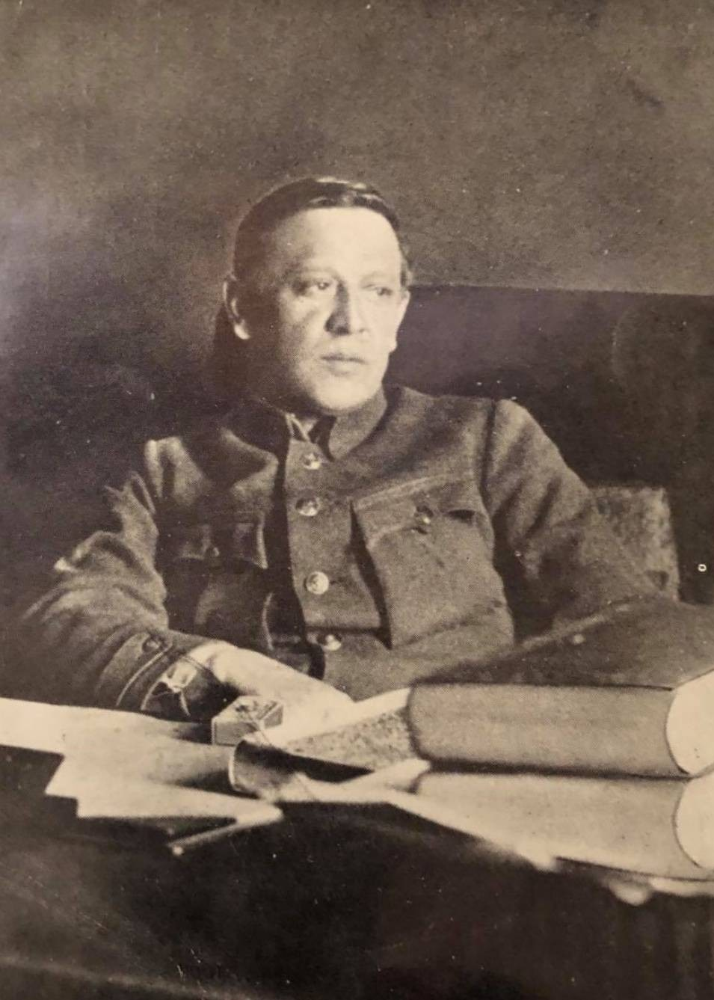
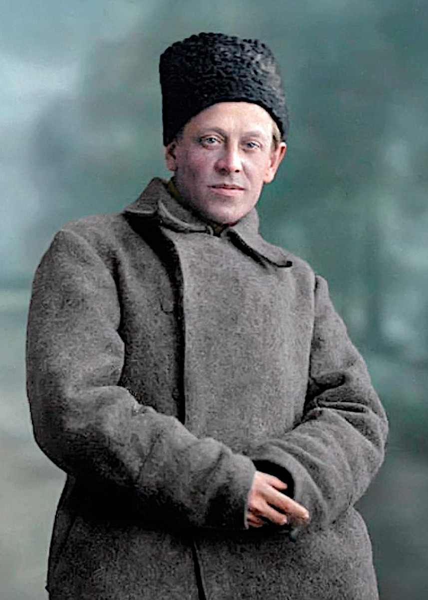
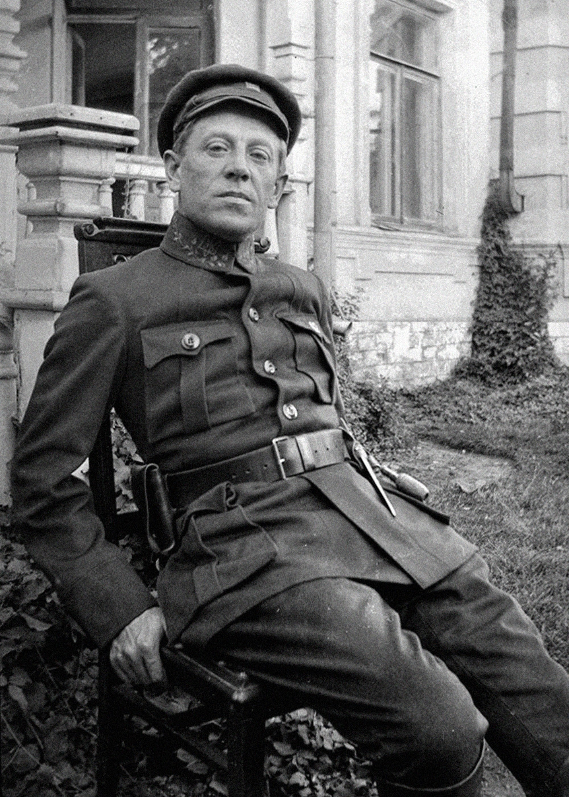
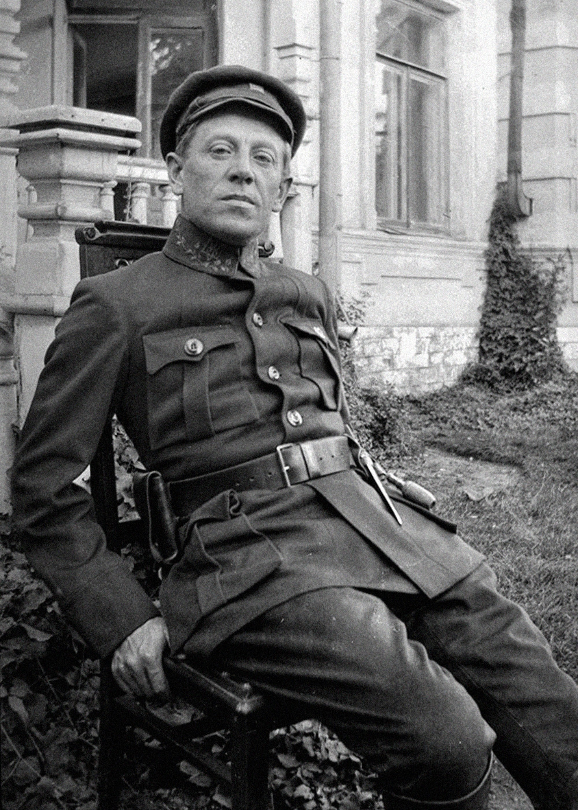

Symon Petlura was a political and military figure, the chief ataman of the UNR Army. In 1919, he headed the UNR Directory and fought against the bolsheviks and the white guards. He concluded an alliance with Poland, but after the defeat of the Ukrainian troops he was forced to emigrate. In Paris, he continued his diplomatic activities, defending the idea of an independent Ukraine. In 1926, he was killed by the NKVD agent samuel schwarzbard. The soviet authorities tried to discredit his name, but he remained a symbol of the struggle for Ukrainian independence
 
